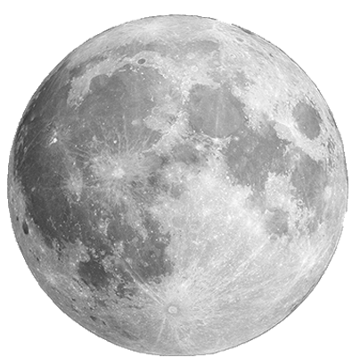
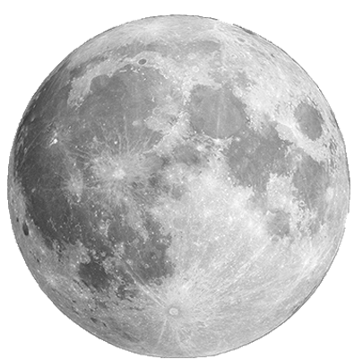

UAU!!! que pouso fascinante!!!. Tinha um grande planeta escondido
atrás deste.
Quanto brilho!!! Vamos explorar aqui primeiro.

O pequeno planeta que estava ao longe era na verdade uma lua de outro planeta. Logo que o Pequeno Príncipe chegou ficou deslumbrado com o grande planeta na qual esta lua orbitava. Era a Terra...
1• Ir para a Terra 2• Espere vamos ver o que a Lua tem de interessante
UAU!!! que pouso fascinante!!!. Tinha um grande planeta escondido
atrás deste.
Quanto brilho!!! Vamos explorar aqui primeiro.
 
Voltar

Voltar